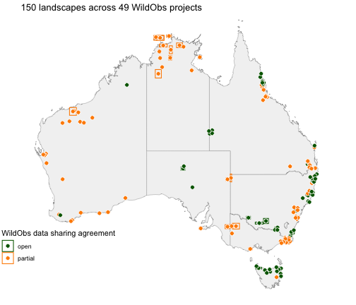

Before you download any camera data, it helps to know what the database holds: which projects sampled your region of interest, when, with what samplingdesign, which species were recorded, and whether their data remain under embargo or are released yet. All of that lives in each project’s metadata, which is small and quick to access. This vignette searches the WildObs Database, reads the metadata of what it finds, shows where the same records are published in other standards (e.g., ALA and TERN), and ends with the each data package’s citations to include in a reference list when using the data. This vignette does not download any tables from any data packages.
# load the WildObs R library
library(WildObsR)
# your personal API key, read from .Renviron (see the Get started vignette)
api_key <- Sys.getenv("WILDOBSR_API_KEY")Search by place, time, species, design or person
wildobs_mongo_query() returns the IDs of projects that
match every filter you give it. A filter left out does not restrict the
search, but at least one filter is needed:
| Filter | What it matches | Example |
|---|---|---|
spatial |
projects with cameras deployed inside a bounding box, in latitude and longitude decimal degrees | list(xmin = 145, xmax = 154, ymin = -29, ymax = -10) |
temporal |
projects collecting data at any time in a date range | list(minDate = as.Date("2022-01-01"), maxDate = as.Date("2022-12-31")) |
taxonomic |
projects that recorded any particular species | c("Phascolarctos cinereus", "Felis catus") |
samplingDesign |
the sampling desing, matching enumerated Camtrap DP values |
"targeted", "systematicRandom",
"opportunistic", … |
contributors |
projects that include a person’s name, email or ORCID, in any role | "Zachary Amir" |
A box over the whole continent lists every project a key can see:
# a box over Australia and its islands
australia <- list(xmin = 110, xmax = 160, ymin = -45, ymax = -9)
# query the database to return every public project ID
all_ids <- wildobs_mongo_query(api_key = api_key, spatial = australia)
# how many projects?
length(all_ids)
#> [1] 49
# run the same query, but only for open projects whose tables can be downloaded today
open_ids <- wildobs_mongo_query(api_key = api_key, spatial = australia,
tabularSharingPreference = "open")
# how many projects?
length(open_ids)
#> [1] 20The difference is the partial projects. Their metadata are made public, but their data tables are withheld because of an embargo placed by a data provider. Data providers can extend or release an embargo, so a project can move between open and partial from one database release to the next, and the counts above will change. Partial projects are worth knowing about: a partial project in your study region is a dataset you could request from its contributors or plan to use once its embargo has expired.
Filters combine as an intersection. For example, the projects that recorded feral cats in 2022 with a targeted design:
# feral cats, surveyed in 2022, by a targeted design
cat_ids <- wildobs_mongo_query(
api_key = api_key,
temporal = list(minDate = as.Date("2022-01-01"), maxDate = as.Date("2022-12-31")),
taxonomic = "Felis catus",
samplingDesign = "targeted"
)
# which project IDs were returned?
cat_ids
#> [1] "NSW_Greater_Blue_Mountains_fire_Leigh_2021-2022_WildObsID_0044"
#> [2] "NSW_Murrumbidgee_Rakali_Sanders_2021-2023_WildObsID_0014"
#> [3] "NSW_NthCoast_BTRWallaby_Blackmore_2020-2022_WildObsID_0019"
#> [4] "NSW_NthCoast_PotParma_Blackmore_2021-2022_WildObsID_0017"
#> [5] "WA_Eurardy_Mammals_Hall_2021-2023_WildObsID_0026"
#> [6] "WA_Hamelin_Mammals_Hall_2021-2023_WildObsID_0023"
#> [7] "WA_UpperWarren_predator_monitoring_Harrison_2022_WildObsID_0024"Download metadata only
You can use the function wildobs_dp_download() to
download both metadata and data tables for all WildObs datasets. To
access metadata only, set the parameter
metadata_only = TRUE to download each project’s descriptor
without its tables, which takes seconds even for every project in the
database. Partial projects always download this way.
# access the descriptors of every visible project
meta <- wildobs_dp_download(api_key = api_key, project_ids = all_ids, metadata_only = TRUE)
#> metadata_only = TRUE -> skipping data resource downloads for speed.Read the metadata as tables
extract_metadata() turns one element of the metadata,
across all packages, into a table with a DPID column naming
the project. You may also ask for several elements at once to get a
named list of tables.
# Inspect sampling design and data-sharing preference, one row per project
project <- extract_metadata(meta, "project")
sharing <- extract_metadata(meta, "WildObsMetadata")
# how the projects were designed
table(project$samplingDesign)
#>
#> clusteredRandom experimental opportunistic simpleRandom
#> 8 9 1 6
#> systematicRandom targeted
#> 13 12
# and how they share their data
table(sharing$tabularSharingPreference)
#>
#> open partial
#> 20 29The temporal metadata hold one row per single-season survey (a
deploymentGroup), so they show how long each project has
been running:
# start and end of every survey in every project
temporal <- extract_metadata(meta, "temporal")
# Calculate the time span of each project, in years
span <- tapply(seq_len(nrow(temporal)), temporal$DPID, function(i) {
# from the first survey's start to the last survey's end
as.numeric(difftime(max(as.Date(temporal$end[i])), min(as.Date(temporal$start[i])),
units = "days")) / 365.25
}) # end per project
summary(span)
#> Min. 1st Qu. Median Mean 3rd Qu. Max.
#> 0.06845 0.49281 1.29500 1.80089 2.10267 12.42163The spatial metadata returns a bounding box, formatted as
geoJSON, for each landscape (a locationName) a
project sampled. Plotted together they show where WildObs’s data
providers have deployed cameras:
# load ggplot to render nice maps
library(ggplot2)
#> Warning: package 'ggplot2' was built under R version 4.5.2
# extract one bounding box per locationName per project
spatial <- extract_metadata(meta, "spatial")
# add the centroid of each box, since many landscapes are too small to see as boxes across the country
spatial$x <- (spatial$xmin + spatial$xmax) / 2
spatial$y <- (spatial$ymin + spatial$ymax) / 2
# add each landscape's data-sharing preference, from its project
spatial <- merge(spatial, sharing[, c("DPID", "tabularSharingPreference")], by = "DPID")
# grab an outline of Australia's states, as an sf object
aus <- sf::st_as_sf(ozmaps::ozmap_states)
# initialise a ggplot
ggplot() +
# Add the outline with states in pale grey
geom_sf(data = aus, fill = "grey95", colour = "grey60") +
# add the larger landscapes as boxes
geom_rect(data = spatial, aes(xmin = xmin, xmax = xmax, ymin = ymin, ymax = ymax,
colour = tabularSharingPreference), fill = NA) +
# add a point at the centre of every landscape
geom_point(data = spatial, aes(x = x, y = y, fill = tabularSharingPreference),
shape = 21, colour = "white", size = 2.5) +
# specify two colours for open vs partial, consistent for boxes and points
scale_fill_manual(values = c(open = "darkgreen", partial = "darkorange"),
aesthetics = c("colour", "fill"), name = "WildObs data sharing agreement") +
# crop to the mainland and Tasmania
coord_sf(xlim = c(113, 154), ylim = c(-44, -10)) +
# count the landscapes and projects in the title
labs(title = sprintf("%d landscapes across %d WildObs projects",
nrow(spatial), length(unique(spatial$DPID)))) +
# no axes or grid, with the legend inside the empty ocean to the west
theme_void() +
theme(legend.position = "inside", legend.position.inside = c(0.12, 0.2))
plot of chunk map
Which species were recorded
The taxonomic metadata list every taxon each project detected, with its rank (e.g., species, genus, family, etc.) and English name, so you can search projects for a specific species before downloading anything.
# every taxon each project recorded
taxa <- extract_metadata(meta, "taxonomic")
# create a vector of taxa ranked to species-level, and by their two-part scientific name
species <- taxa[taxa$taxonRank == "species" & grepl("^[A-Z][a-z]+ [a-z-]+$", taxa$scientificName), ]
# the number of projects that recorded each species, most widespread first
head(sort(table(species$scientificName), decreasing = TRUE), 10)
#>
#> Felis catus Tachyglossus aculeatus Canis dingo
#> 47 40 37
#> Vulpes vulpes Colluricincla harmonica Trichosurus vulpecula
#> 35 29 28
#> Oryctolagus cuniculus Wallabia bicolor Gymnorhina tibicen
#> 27 27 26
#> Sus scrofa
#> 26Find the publications associated with a project
Papers, datasets, reports, and workflows linked to a project are
listed in its relatedIdentifiers, using persistent
identifiers like a DOI or a URL. WildObs adds one more type, the
project’s RAiD, a persistent identifier
for the research activity itself.
# links from each project to papers, datasets and its RAiD
related <- extract_metadata(meta, "relatedIdentifiers")
# display the type of identifier and how it is related to the project
table(related$relatedIdentifierType, related$relationType)
#>
#> IsCitedBy IsDerivedFrom IsPartOf IsPublishedIn IsSourceOf IsSupplementTo
#> DOI 1 1 0 18 7 8
#> RAiD 0 0 49 0 0 0
#> URL 0 0 2 0 0 0Find the contributors associated with a project
Each project lists the people affiliated with it, with their role,
organisation and ORCID. For a partial
project, they are who to ask about access before its embargo ends.
extract_metadata() returns them as a table with one row per
person per project:
# everyone associated with each project, one row per person per project
collab <- extract_metadata(meta, "contributors")
# the roles people hold across all projects
table(collab$role)
#>
#> contact contributor principalInvestigator
#> 5 80 49
#> publisher rightsHolder
#> 2 7
# Inspect partial projects, and how many months their tables are embargoed for
partial <- sharing[sharing$tabularSharingPreference == "partial",
c("DPID", "embargoPeriodMonths")]
# add the principal investigators of the partial projects to create a new table
partial_pi <- merge(partial, collab[collab$role == "principalInvestigator", ], by = "DPID")
# inspect their names, organisations and embargo lengths
head(partial_pi[, c("DPID", "title", "organization", "embargoPeriodMonths")], 5)
#> DPID
#> 1 NSW_Greater_Blue_Mountains_fire_Leigh_2021-2022_WildObsID_0044
#> 2 NSW_KangarooValley_AllFauna_CORRIGAN_2024-2025_WildObsID_0035
#> 3 NSW_NthCoast_BTRWallaby_Blackmore_2020-2022_WildObsID_0019
#> 4 NSW_NthCoast_PotParma_Blackmore_2021-2022_WildObsID_0017
#> 5 NSW_PostFire_LFPotoroo_Bentley_2021-2022_WildObsID_0015
#> title organization
#> 1 Kellie A Leigh Science for Wildlife
#> 2 Rhys Corrigan NSW Biodiversity and Conservation Trust
#> 3 Caroline J. Blackmore NSW Environment and Heritage
#> 4 Caroline J. Blackmore NSW Environment and Heritage
#> 5 Joss Bentley NSW Environment and Heritage
#> embargoPeriodMonths
#> 1 13
#> 2 48
#> 3 19
#> 4 48
#> 5 48The email column holds each contributor’s address, and
the path column their ORCID. Write to the principal
investigator, or to the person with the contact role where
a project names one. For a project with no address listed, write to data@wildobs.org.au.
Find WildObs data in other portals
WildObs also publishes animal detections of open projects to two national portals, so that people who work in other standards can use them without this package:
| Portal | Standard | What it holds | Find it with |
|---|---|---|---|
| Atlas of Living Australia (ALA) | Darwin Core occurrences, passed on to GBIF | one record per animal observation | the galah
package |
| TERN EcoPlots | the TERN ontology for plot data | one record per animal observation, grouped by landscape | the EcoPlots API, or the Python library terndata.ecoplots
|
The records are the same in both portals and in the WildObs Database. Each portal structures the data differently. The ALA occurrence records tell you where and when a species was recorded, but not how hard anyone looked. The EcoPlots portal includes structured survey effort that links the camera trap data to other structured ecological monitoring efforts, such as Ecological Monitoring System Australia (EMSA). Clear sampling effort is necessary for occupancy and abundance models, and is easily derived from data downloaded from WildObs.
The checks below compare each portal with the two projects bundled
with WildObsR, which example_datapackages() loads without a
download.
# use the bundled copies of two open projects
bundled <- example_datapackages()
# Grab the observations table for each, subsetted to only animal records
animals <- lapply(bundled, function(dp) {
# every observation in the package
obs <- frictionless::read_resource(dp, "observations")
# keep only the records of animals, which are what the portals receive
obs[obs$observationType == "animal", ]
}) # end per projectAtlas of Living Australia
In the ALA, WildObs is a data provider, “Wildlife Observatory of Australia”, and each WildObs project is a dataset, which the ALA calls a data resource. Searching the providers finds WildObs, and counting its records by data resource lists every project it has published:
# load ALA's r library for accessing data
library(galah)
# set configurations to query the Atlas of Living Australia (rather than global)
galah_config(atlas = "Australia", verbose = FALSE)
# WildObs as a data provider, with its ALA identifier
search_all(providers, "Wildlife Observatory of Australia")
#> # A tibble: 1 × 3
#> id name uri
#> <chr> <chr> <chr>
#> 1 dp5214 Wildlife Observatory of Australia https://collections.ala.org.au/ws/da…
# count the number of records in each WildObs dataset in the ALA
ala_datasets <- galah_call() |>
# only records that WildObs provided
galah_filter(dataProviderUid == "dp5214") |>
# one row per dataset, by its ALA identifier
galah_group_by(dataResourceUid) |>
# count records rather than download them
atlas_counts()
# display the results below
ala_datasets
#> # A tibble: 3 × 2
#> dataResourceUid count
#> <chr> <int>
#> 1 dr33011 42931
#> 2 dr31594 33522
#> 3 dr33008 17077Each dataset’s description in the ALA’s collections registry gives
its title, and stores the WildObs project ID as its guid,
which links the two:
# For each project, read the ALA's description as JSON
registry <- lapply(ala_datasets$dataResourceUid, function(dr) {
jsonlite::fromJSON(paste0("https://collections.ala.org.au/ws/dataResource/", dr))
}) # end per dataset
# the WildObs project ID each dataset was published from
ala_datasets$WildObsID <- vapply(registry, function(reg) reg$guid, character(1))
# and its DOI at GBIF
ala_datasets$doi <- vapply(registry, function(reg) reg$doi, character(1))
# view what was returned as a data frame
as.data.frame(ala_datasets)
#> dataResourceUid count
#> 1 dr33011 42931
#> 2 dr31594 33522
#> 3 dr33008 17077
#> WildObsID
#> 1 NSW-VIC_Upper_Murray_fire_landscapes_Linley_2021-22_WildObsID_0009
#> 2 ZAmir_QLD_Wet_Tropics_2022_WildObsID_0001
#> 3 NSW_Woomargama_wombats_Linley_2021-22_WildObsID_0010
#> doi
#> 1 10.15468/z2w339
#> 2 10.15468/kjqw3f
#> 3 10.15468/4ca4edThe Woomargama project is in the ALA as one of these datasets. Its records per species match the bundled copy exactly:
# the ALA identifier of the Woomargama project
woomargama <- "NSW_Woomargama_wombats_Linley_2021-22_WildObsID_0010"
dr_uid <- ala_datasets$dataResourceUid[ala_datasets$WildObsID == woomargama]
# records per species in the ALA, counted without a download
ala_species <- galah_call() |>
# only the Woomargama dataset
galah_filter(dataResourceUid == dr_uid) |>
# one row per scientific name
galah_group_by(scientificName) |>
atlas_counts()
# records per species in the bundled WildObs package
wildobs_species <- as.data.frame(table(scientificName = animals[[woomargama]]$scientificName),
responseName = "wildobs")
# merge both sources side by side
both <- merge(ala_species, wildobs_species, by = "scientificName", all = TRUE)
# inspect detections by most recorded first
head(both[order(-both$count), ], 8)
#> scientificName count wildobs
#> 86 Wallabia bicolor 4109 4109
#> 84 Vombatus ursinus 3808 3808
#> 41 Notamacropus rufogriseus 2545 2545
#> 78 Trichosurus vulpecula 1770 1770
#> 34 Macropus giganteus 1207 1207
#> 67 Rattus rattus 1101 1101
#> 42 Oryctolagus cuniculus 432 432
#> 29 Gymnorhina tibicen 203 203
# species where the two disagree
sum(both$count != both$wildobs, na.rm = TRUE)
#> [1] 0Counts require no ALA account, but downloading the records themselves
does: the ALA asks for an email address registered with it. With one
stored in .Renviron as ALA_EMAIL, the records
of a dataset come down as one table:
# the email address registered with the ALA, read from .Renviron
galah_config(email = Sys.getenv("ALA_EMAIL"))
# every occurrence record in the Woomargama dataset
occs <- galah_call() |>
# only the relevant dataset
galah_filter(dataResourceUid == dr_uid) |>
# download the occurrences
atlas_occurrences()
# how many occurrences were returned?
nrow(occs)
#> [1] 17077The ALA passes the records on to GBIF, which gave each WildObs dataset the DOI listed above.
TERN EcoPlots
EcoPlots is TERN’s portal
for plot-based ecological data, where WildObs is one of the datasets.
Its API is open: searching it needs no account or key. Every search is a
POST request whose body holds a query, and the
discovery endpoints list the values a query can use.
# specify the EcoPlots API
ecoplots <- "https://ecoplots.tern.org.au/api/v1.0"
# helper function to list the values of one search field, optionally within an existing query
ecoplots_discover <- function(field, query = setNames(list(), character(0))) {
# the query as a JSON body, keeping an empty query as {}
body <- jsonlite::toJSON(list(query = query), auto_unbox = TRUE)
# send it to the discovery endpoint for this field
res <- httr::POST(paste0(ecoplots, "/discovery/", field), body = body,
httr::content_type_json())
# stop if the request failed
httr::stop_for_status(res)
# read the answer as a table of names (key) and identifiers (uri)
jsonlite::fromJSON(httr::content(res, "text", encoding = "UTF-8"))
} # end ecoplots_discover
# every dataset in EcoPlots
datasets <- ecoplots_discover("dataset")
datasets
#> key
#> 1 TERN Ecosystem Surveillance
#> 2 QBEIS
#> 3 Three Parks Savanna
#> 4 Williams Wet Tropics Vertebrate database
#> 5 TERN Ecosystem Processes
#> 6 TERN AusPlots Forest
#> 7 WildObs
#> 8 NSW FMIP
#> uri
#> 1 http://linked.data.gov.au/dataset/ausplots
#> 2 http://linked.data.gov.au/dataset/corveg
#> 3 http://linked.data.gov.au/dataset/three-parks-savanna
#> 4 http://linked.data.gov.au/dataset/wet-tropics-vertebrate
#> 5 http://linked.data.gov.au/dataset/tern-ecosystem-processes
#> 6 http://linked.data.gov.au/dataset/ausplots-forest
#> 7 http://linked.data.gov.au/dataset/wildobs
#> 8 http://linked.data.gov.au/dataset/nsw-fmip
# grab the identifier of the WildObs dataset
wildobs_uri <- datasets$uri[datasets$key == "WildObs"]In EcoPlots, a site is one landscape (a WildObs
locationName), and its name ends with the WildObs project
ID. Listing the sites therefore shows which projects are published:
# the WildObs query: everything from the WildObs dataset
wildobs_query <- list(dataset = list(wildobs_uri))
# gather every WildObs site in EcoPlots
sites <- ecoplots_discover("site_id", wildobs_query)
# inspect what was returned
sites$key
#> [1] "Wooroonooran_NP-wildobsid_0001"
#> [2] "Wooroonooran_Goldfield_Track-wildobsid_0001"
#> [3] "Danbulla_NP-wildobsid_0001"
#> [4] "Eacham_Curtain_Fig_NPs-wildobsid_0001"
#> [5] "Daintree_NP-wildobsid_0001"
#> [6] "Mount_Lewis_NP-wildobsid_0001"
#> [7] "obscured_ZAmir_QLD_Wet_Tropics_2022-wildobsid_0001"
# the type of record they hold, which a data request must name
feature <- ecoplots_discover("feature_type", wildobs_query)
# inspect what was returned
feature$key
#> [1] "animal occurrence"The data endpoint returns the records that match a
query, here as CSV. One landscape from the Wet Tropics project:
# specify the Daintree landscape of the Wet Tropics project, and its animal records
daintree_query <- c(wildobs_query, list(
site_id = list(sites$uri[sites$key == "Daintree_NP-wildobsid_0001"]),
feature_type = list(feature$uri)
))
# Format a httr request to return records as CSV
res <- httr::POST(paste0(ecoplots, "/data/stream"), query = list(dformat = "csv"),
body = jsonlite::toJSON(list(query = daintree_query), auto_unbox = TRUE),
httr::content_type_json(), httr::add_headers(Accept = "text/event-stream"),
httr::timeout(120))
httr::stop_for_status(res)
# read the CSV into a table
tern <- utils::read.csv(text = httr::content(res, "text", encoding = "UTF-8"))
# one row per animal record
nrow(tern)
#> [1] 2479
# inspect some key values
head(tern[, c("siteName", "scientificName", "animalCount_number", "animalCountResultTime")])
#> siteName scientificName animalCount_number
#> 1 Daintree_NP-wildobsid_0001 Alectura lathami 1
#> 2 Daintree_NP-wildobsid_0001 Megapodius reinwardt 2
#> 3 Daintree_NP-wildobsid_0001 Megapodius reinwardt 1
#> 4 Daintree_NP-wildobsid_0001 Melloria quoyi 1
#> 5 Daintree_NP-wildobsid_0001 Muridae 1
#> 6 Daintree_NP-wildobsid_0001 Muridae 1
#> animalCountResultTime
#> 1 2022-10-29T00:00:00
#> 2 2022-09-26T00:00:00
#> 3 2022-10-28T00:00:00
#> 4 2022-11-29T00:00:00
#> 5 2022-09-21T00:00:00
#> 6 2022-09-24T00:00:00The same landscape in the bundled package holds the same records:
# the Wet Tropics project, and the cameras in its Daintree landscape
wet_tropics <- "ZAmir_QLD_Wet_Tropics_2022_WildObsID_0001"
# extract the deployments data table and subset to the Daintree landscape
deps <- frictionless::read_resource(bundled[[wet_tropics]], "deployments")
daintree_deps <- deps$deploymentID[deps$locationName == "Daintree_NP"]
# grab all animal records from the Daintree cameras
daintree <- animals[[wet_tropics]][animals[[wet_tropics]]$deploymentID %in% daintree_deps, ]
# compare the number of records in each source
c(ecoplots = nrow(tern), wildobs = nrow(daintree))
#> ecoplots wildobs
#> 2479 2479
# repate for the number of animals counted
c(ecoplots = sum(tern$animalCount_number), wildobs = sum(daintree$count))
#> ecoplots wildobs
#> 3023 3023EcoPlots places every record at the landscape’s single coordinate and gives its date without a time, so it suits questions about where and when species occur rather than camera-level analyses. TERN’s guide to the EcoPlots API in R describes more of the query fields.
Cite what you use
Each project carries the citation that ensures fair recognition to
each contributors associated with a particular dataset.
cite_datapackages() returns it, with the version of the
data package stored in the database when it was accessed. The citations
can be returned as text, as BibTeX for a reference manager, or as a
table:
# the two open projects bundled with WildObsR, as an example
examples <- c("ZAmir_QLD_Wet_Tropics_2022_WildObsID_0001",
"NSW_Woomargama_wombats_Linley_2021-22_WildObsID_0010")
# display formatted references, with the date the data were accessed
writeLines(cite_datapackages(meta[examples], accessed = Sys.Date()))
#> Zachary Amir, Tom Bruce & Matthew Luskin (2022). WildObs Camera Trap Data Package: Zachary Amir's camera trap surveys from 6 national parks in QLD's Wet Tropics rainforests from late 2022 to early 2023 targeting feral and native vertebrates [Camera Trap Data Package]. WildObs National Wildlife Camera Database. https://wildobs.org.au. RAiD: https://raid.org/10.83062/cb5829ab. WildObs data package version 1.2.0. Accessed 2026-11-10.
#> Grant Linley, Chris Jolly & Emma E Spencer (2021). WildObs Camera Trap Data Package: Wombat burrows are hotspots for small vertebrates in a landscape subject to gigafire [Camera Trap Data Package]. WildObs National Wildlife Camera Database. https://wildobs.org.au. RAiD: https://raid.org/10.83062/9eec588a. WildObs data package version 1.1.0. Accessed 2026-11-10.
# or BibTeX
utils::toBibtex(cite_datapackages(meta[examples], format = "bibtex"))
#> @Misc{ZAmir_QLD_Wet_Tropics_2022_WildObsID_0001,
#> title = {Zachary Amir's camera trap surveys from 6 national parks in QLD's Wet Tropics rainforests from late 2022 to early 2023 targeting feral and native vertebrates},
#> author = {Zachary Amir and Tom Bruce and Matthew Luskin},
#> year = {2022},
#> note = {Version 1.2.0. Licence: CC-BY-4.0},
#> url = {https://raid.org/10.83062/cb5829ab},
#> }
#>
#> @Misc{NSW_Woomargama_wombats_Linley_2021-22_WildObsID_0010,
#> title = {Wombat burrows are hotspots for small vertebrates in a landscape subject to gigafire},
#> author = {Grant Linley and Chris Jolly and Emma E Spencer},
#> year = {2021},
#> note = {Version 1.1.0. Licence: CC-BY-4.0},
#> url = {https://raid.org/10.83062/9eec588a},
#> }Packages downloaded with their tables can also cite the products
behind each WildObs covariate, with covariates = TRUE. Each
product’s citation is named by the covariates it is behind, without
their spatial scale, so FLII covers FLII_point
to FLII_10km2:
# select the bundled Wet Tropics package, which holds its covariates table
wt <- example_datapackages()[["ZAmir_QLD_Wet_Tropics_2022_WildObsID_0001"]]
# the package's citation, then one per covariate product
refs <- cite_datapackages(wt, covariates = TRUE)
# the Forest Landscape Integrity Index, behind the FLII_ columns
refs[["FLII"]]
#> [1] "Grantham, H.S., Duncan, A., Evans, T.D., Jones, K.R., Beyer, H.L., Schuster, R. et al. (2020). Anthropogenic modification of forests means only 40% of remaining forests have high ecosystem integrity. Nature Communications, 11, 5978."
# a product behind several covariates names them all, so search the names
refs[grepl("mean_monthly_temperature", names(refs))]
#> mean_monthly_precipitation; mean_monthly_temperature
#> "Hutchinson, M., Xu, T., Kesteven, J., Marang, I., & Evans, B. (2021). ANUClimate 2.0 [Dataset]. NCI Australia."Session information
sessionInfo()
#> R version 4.5.1 (2025-06-13)
#> Platform: aarch64-apple-darwin20
#> Running under: macOS Tahoe 26.5.1
#>
#> Matrix products: default
#> BLAS: /Library/Frameworks/R.framework/Versions/4.5-arm64/Resources/lib/libRblas.0.dylib
#> LAPACK: /Library/Frameworks/R.framework/Versions/4.5-arm64/Resources/lib/libRlapack.dylib; LAPACK version 3.12.1
#>
#> locale:
#> [1] C.UTF-8/C.UTF-8/C.UTF-8/C/C.UTF-8/C.UTF-8
#>
#> time zone: Australia/Brisbane
#> tzcode source: internal
#>
#> attached base packages:
#> [1] stats graphics grDevices utils datasets methods base
#>
#> other attached packages:
#> [1] galah_2.2.0 ggplot2_4.0.3 WildObsR_0.3.0.9000
#> [4] here_1.0.1
#>
#> loaded via a namespace (and not attached):
#> [1] tidyselect_1.2.1 dplyr_1.2.1 farver_2.1.2 S7_0.2.0
#> [5] fastmap_1.2.0 timechange_0.4.0 lifecycle_1.0.5 sf_1.1-3
#> [9] cluster_2.1.8.1 ellipsis_0.3.2 terra_1.9-50 magrittr_2.0.5
#> [13] compiler_4.5.1 rlang_1.3.0 tools_4.5.1 utf8_1.2.6
#> [17] yaml_2.3.12 lobstr_1.1.2 knitr_1.52 bit_4.6.0
#> [21] pkgbuild_1.4.8 classInt_0.4-11 curl_8.0.0 xml2_1.3.8
#> [25] plyr_1.8.9 RColorBrewer_1.1-3 pkgload_1.4.1 KernSmooth_2.23-26
#> [29] withr_3.0.3 purrr_1.2.2 desc_1.4.3 grid_4.5.1
#> [33] e1071_1.7-17 scales_1.4.0 MASS_7.3-65 cli_3.6.6
#> [37] crayon_1.5.3 lutz_0.3.2 vegan_2.7-6 chron_2.3-63
#> [41] generics_0.1.4 remotes_2.5.0 otel_0.2.0 stringdist_0.9.17
#> [45] rstudioapi_0.17.1 httr_1.4.9 tzdb_0.5.0 sessioninfo_1.2.3
#> [49] DBI_1.3.0 cachem_1.1.0 proxy_0.4-29 stringr_1.6.0
#> [53] splines_4.5.1 parallel_4.5.1 frictionless_1.3.0 vctrs_0.7.3
#> [57] devtools_2.4.6 Matrix_1.7-3 jsonlite_2.0.0 mongolite_4.1.0
#> [61] geojsonsf_2.0.5 potions_0.2.0 hms_1.1.4 bit64_4.8.6
#> [65] rrapply_1.2.7 oz_1.0-22 tidyr_1.3.2 units_1.0-1
#> [69] ozmaps_0.4.5 glue_1.8.1 codetools_0.2-20 lubridate_1.9.5
#> [73] stringi_1.8.9 gtable_0.3.6 tibble_3.3.1 pillar_1.11.1
#> [77] rappdirs_0.3.4 httr2_1.2.2 R6_2.6.1 rprojroot_2.1.1
#> [81] vroom_1.7.1 evaluate_1.0.5 lattice_0.22-7 readr_2.2.0
#> [85] memoise_2.0.1 class_7.3-23 Rcpp_1.1.2 nlme_3.1-168
#> [89] permute_0.9-10 mgcv_1.9-3 xfun_0.61 fs_1.6.6
#> [93] usethis_3.2.1 pkgconfig_2.0.3